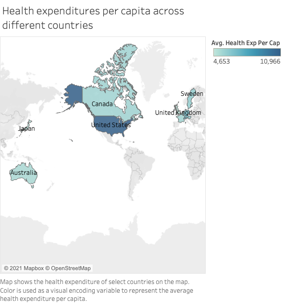

The Impacts of Health Expenditure
Health expenditure is defined as any private or public spending relating to improving the healthcare of a population, and this entails both preventative and treatment measures. Intuitively, it may seem like higher rates of healthcare expenditure, particularly in the public sector, leads to better health outcomes, but it’s a bit more complicated than that.
This set of visualizations aims to identify the impact of health expenditure on health outcomes on the following three levels: as a percentage of total government expenditure, the costs of medicine, and hospital access. We will be focusing on the United States from a global perspective.
Global Context of Health
“Developed countries tend to have higher percentages of GDP due to healthcare expenditure, with US having the highest percentage at 0.16% GDP”
To get a global view of healthcare expenditure, it is useful to see the expenditure of each of the global region as defined by the World Health Organization, which are defined as follows:
 Image Source: World Health Organization
Image Source: World Health Organization{kind=link}
Health expenditure fluctuated to varying degrees in each region between the years 1995 - 2014 but overall a larger proportion of government expenditure was dedicated to healthcare in 2014. The only exception to this trend is the Western Pacific region, but the decrease in expenditure was only 0.05% making the difference marginal. The most significant increase was in the Americas region which changed from 14.87% in 1995 to 18.07%.
% of GDP due to healthcare expenditure is shown in this image. The darker the blue, the more percent of GDP due to healthcare. The scale is shown in the image as well. Used World Indicators Data.
The Gross Domestic Product (GDP) is the market value of all goods and services produced in a country. The growth and innovation of all industries, including healthcare contribute to a country’s GDP.
As seen in the image above, more developed countries tend to have a greater percentage of GDP due to healthcare expenditure, with the US having the highest percentage. This makes sense, as more developed countries tend to have more advanced technologies and better facilities for treatment, which tend to be more expensive.
Impact of Hospital Access
“The United States has the highest healthcare expenditure of $10966 per capita among all countries considered”

The first visualization is a representation of the overall healthcare expenditure across 12 countries - the United States, Canada, Australia, Sweden, United Kingdom, Japan, Belgium, Netherlands, Austria, France, Germany, and Switzerland.
Looking at the healthcare expenditure per capita values for each of the countries above, it is clear that the United States has the highest healthcare expenditure from a global standpoint. To understand the impact of healthcare expenditure, we can compare it with the cost of living for each of the countries being compared. The cost of living index is an indicator of how much goods and services cost.
“Within the US, Texas has the most extensive hospital access and a below-average cost of living index indicating that the cost of living and healthcare access aren’t correlated”
From this visualization, it is clear that the US has the highest average healthcare expenditure per capita with an average cost of living index. To further analyze how this high expenditure influences the healthcare facilities available to people we can look at the hospital access vs cost of living in each of the states in the US where the number of hospital locations is a representation of the healthcare expenditure per capita.
Impact of Health Costs via Health Expenditure
“Despite the United States spending nearly twice as much as Canada on health expenditure per capita, the United States has three times the costs of medicine than Canada”
Universal Health Coverage is defined by the World Health Organization in which all citizens get access to basic healthcare without incurring financial hardship. UHC is most commonly executed in some countries as federally funded single-payer healthcare systems but can take other forms. A single-payer healthcare system consists of a single entity for each country that is responsible for financing the health costs of all of their citizens and residents.
As the United States does not have universal healthcare in the form of a single-payer system, our healthcare system can be extremely complicated and expensive to navigate. Consequently, this leads to health inequities that aren’t seen at the same level in other developed countries with single-payer health systems. In recent years the push for healthcare reform in the US (like the growing Medicare for All movement) has made universal healthcare a prominent topic of discussion.
Before creating this visualization we had assumed that since the United States didn’t have universal healthcare, its governmental expenditure on healthcare would be significantly lower than that of countries with universal healthcare. However, public healthcare expenditure is similar to countries with healthcare systems that are globally seen as affordable and accessible such as the United Kingdom, Canada, and many of the countries from the European Union.

Also if we look at the countries with the highest healthcare expenditures from the government, we can see that they are from different regions, sizes, and income groups.
Medicine Costs
Since many European countries and Canada have universal healthcare but have a similar percentage of spending on health expenditure as the United States, it brings the question of whether the universal healthcare system in the European countries and Canada reduced the cost of medicine or drugs. According to an evaluation from the Organisation for Economic Co-operation and Development (OCDE), the United States has over three times the price of patented medicine compared to Canada and European countries for the year 2019. This means despite having a similar percentage of health expenditure, the price of medicine is drastically different. However, another differing factor is the actual amount being spent for each person in the population.
Comparison of the individual European countries, Canada, and the United States. A trendline was made
for individual European countries. Health expenditure per capita and medicine price ratio are from 2019.
Despite the United States spending nearly twice as much as Canada on health expenditure per capita, the United States has three times the costs of medicine than Canada. However, looking at another lens can make sense of this trend. A possibility is that because the cost of medicine is high, then the country may have to invest more in health expenditure per capita. This can be seen in the positive trend occurring with the individual European countries where the higher the spending in health per capita, then the higher the drug price ratio. It was initially theorized that if a country doesn’t spend a low amount of money on health expenditure, then the country may not be able to help the population be able to afford medicine. Does the same theory apply to developing countries?

For developing countries, the trend from developed countries seems to not apply. Instead of seeing a strong positive correlation between health expenditure and medicine price ratio, a lower variability is seen with higher health expenditure in both per capita and percentage in GDP. An interesting outlier is India which has a medicine price ratio that is 33.1 times higher than the international reference unit price of generic medicine. Meanwhile, Indonesia has a low median price ratio of 1.8 despite having a level of similar health expenditure as India. The reasoning is beyond just the numbers on health expenditure and is driven by governmental policies and perhaps medicine availability in that country. For instance, it wasn’t until 2014 India started focusing on creating policies to help control drug prices. The data represented here was average pricing from 2007 to 2013.
In regards to the pricing of medicine, the United States government currently does not conduct direct regulation or negotiation of drug prices. This could explain the high cost of medicine even with such a high health expenditure budget.

In the United States, wholesale acquisition costs (estimate of the manufacturer’s list price for a drug to wholesalers or direct purchasers) of drugs that have been increasing in price have a consistent price change. Every year since 2016, the costs of those drugs have increased at least 7% more than the prior year.
As many countries import medicine that has been developed in the United States, the effect of these drug price changes can be seen in their respective changes in healthcare expenditure by GDP% increase. In this visualization we will look at Canada, countries in the European Union, the United States, and India. The United States, Canada, and the European Union show about a 1% to 3% increase in health expenditure by GDP % increase from the prior year between the years 2016-2019. India has the highest increase of health expenditure by GDP % in these three years but the percentage of increase itself has decreased each year.
For comparing the changes in health expenditure of the US and the changes in increasing drug prices, it seems not to have a significant impact as it does not follow the trend of changes in drug price. The rationale is the drugs that have been increasing in price are most likely drugs not commonly purchased by the public. This same rationale might apply or they have their own generic brands like Canada or the countries within the European Union that have their own regulation in pricing of medicine to be affordable. Overall, health expenditure in the US is high partly from the contribution of unregulated and higher-priced medicine.
Conclusion
Healthcare expenditure as a percentage of a countries’ budgets has increased over time, with more developed countries, such as the US, having a greater percentage of GDP due to healthcare expenditure. The US, in fact, spends a lot more on healthcare per capita than any other country, while having an average cost of living. Within the states, Texas has the highest number of hospitals while having a relatively low cost of living.
However, the United States’s high level of health expenditure does not make healthcare more accessible to the public by itself, and this is clearly shown by the high costs of medicine in the US that steadily increase each year. With this knowledge, we can conclude that making healthcare accessible in the United States is not a matter of spending more money. Instead, the US government should focus on improving regulations of healthcare costs and allowing for the negotiation of pharmaceutical drugs to bring the cost down for American families.
Datasets Used
WHO: General government expenditure on health as a percentage of total government expenditure
US Hospital Locations
WHO: Median consumer price ratio of selected generic medicines - Public
World-Bank-Data-by-Indicators
WHO Consumer Price Ratio
Drug WAC Increases
2019 Health Expenditure
Canada Price Ratio